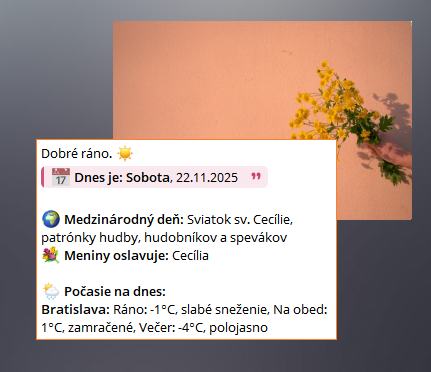
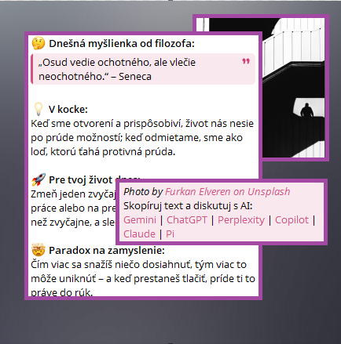
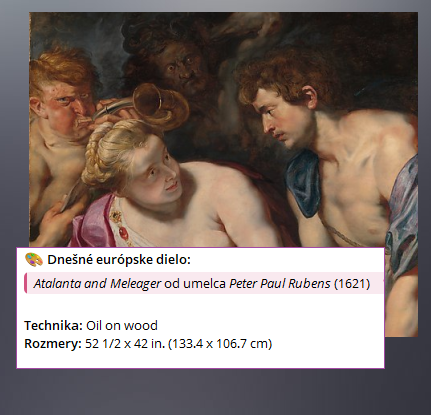
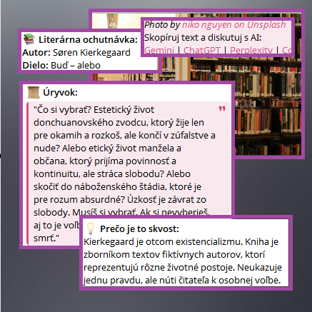
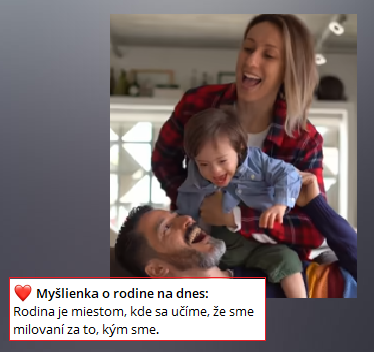
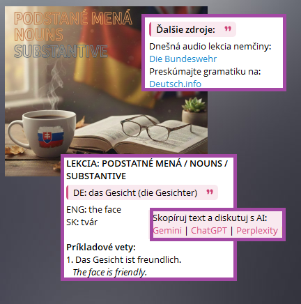
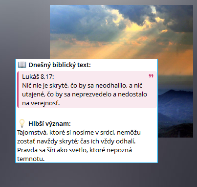
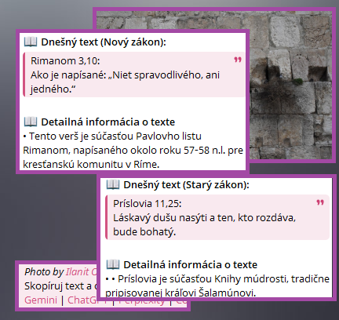
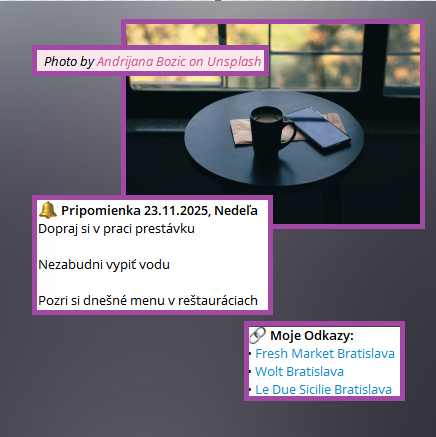

Ranný Prehľad
Začnite deň informovane. Váš osobný brífing s počasím, meninami, historickými udalosťami a dávkou zaujímavostí, všetko inteligentne zhrnuté umelou inteligenciou.
Vaša denná dávka inšpirácie, vedomostí a reflexie, doručená priamo k vám.
Personalizovaný obsah, ktorý rešpektuje váš čas a záujmy.

Začnite deň informovane. Váš osobný brífing s počasím, meninami, historickými udalosťami a dávkou zaujímavostí, všetko inteligentne zhrnuté umelou inteligenciou.

Rozšírte si obzory s myšlienkami veľkých filozofov. Každý deň jeden citát, jeho moderná interpretácia a paradox na zamyslenie.

Objavte poklady európskeho umenia. Každý deň vám predstavíme jedno významné dielo z Metropolitného múzea umenia, vrátane detailov o autorovi a technike.

Ponorte sa do hlbín ľudskej duše. Každý deň jeden literárny skvost – od Dostojevského po Hemingwaya.

Pripomeňte si vzácne chvíle. Každý deň jedna fotografia z vášho rodinného archívu spolu s myšlienkou o rodine.

Zlepšujte sa v nemčine každý deň. Systematicky vám predstavíme nové slovíčka, gramatiku a frázy v kontexte, aby ste si jazyk osvojili prirodzene.

Stíšte sa s denným biblickým textom. Pripravíme pre vás zamyslenie, krátku modlitbu a otázku na reflexiu, ktorá vás bude sprevádzať počas dňa.

Ponorte sa hlbšie do textov Starého a Nového zákona. Každá lekcia prináša detailný historický a duchovný kontext k vybranému veršu.

Vytvorte si vlastný obsah. Nastavte si denné pripomienky, odkazy na obedové menu reštaurácií alebo motivačné citáty, ktoré chcete vidieť každý deň.
YourDailyPulse je navrhnutý pre maximálnu jednoduchosť a flexibilitu. Vyberte si témy, nastavte čas a o ostatné sa postaráme my.
Vyberte si len témy, ktoré vás zaujímajú, a nastavte si čas doručenia, ktorý vám vyhovuje.
Od duchovnej reflexie, cez jazykové lekcie až po filozofiu. Neustále pridávame nový obsah.
Vyberte si preferovaný jazyk a dostávajte obsah pripravený špeciálne pre vás.
Všetok obsah vám pohodlne doručíme na platformu, ktorú už používate každý deň.
Vaše nastavenia sú len vaše. Rešpektujeme vaše súkromie a nikdy nezdieľame vaše dáta.
Využívame pokročilú umelú inteligenciu na tvorbu unikátneho a hodnotného obsahu každý deň.
Registrácia je bezplatná a trvá len minútu. Vytvorte si účet a objavte svoj denný pulz inšpirácie a vedomostí.